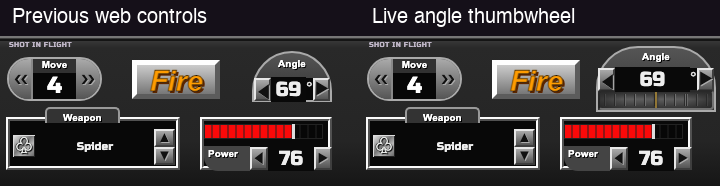
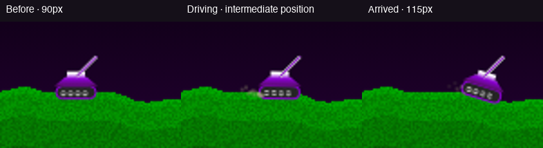
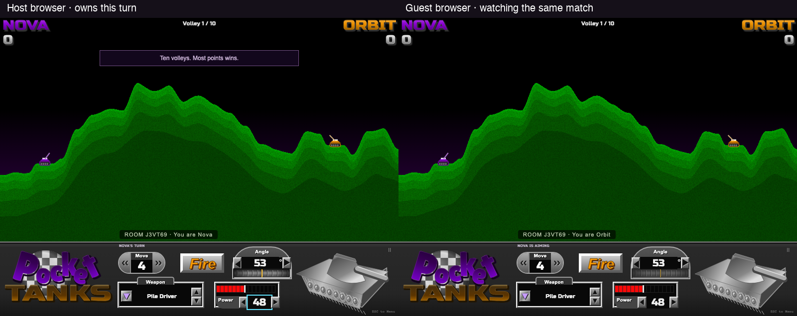
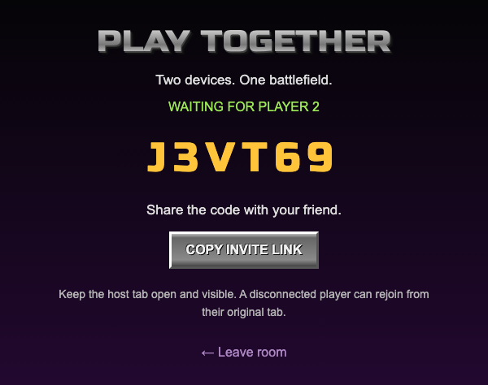
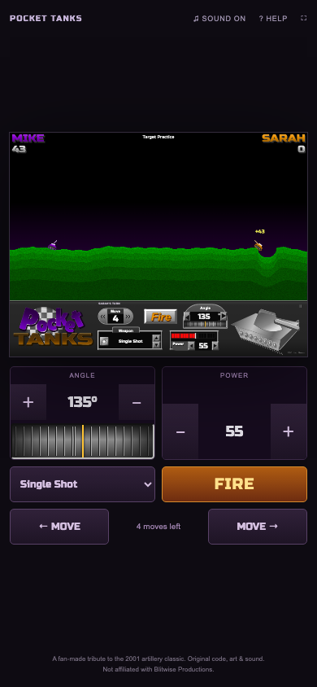
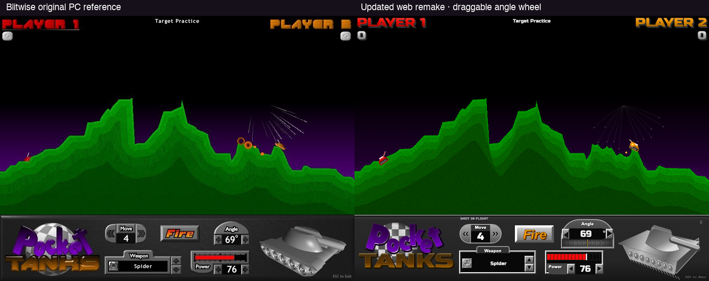

Tanks now drive, aiming responds during a drag, and two browsers can share a room. These captures come from the running game. The movement recording plays at normal speed.
Play gameEarlier six-frame comparisonSource code






| Dimension | Weight | Score / 10 |
|---|---|---|
| Composition | 20% | 9 |
| Geometry | 20% | 8.5 |
| Palette | 15% | 9 |
| Typography | 15% | 7 |
| HUD / controls | 20% | 7.5 |
| Effect / finish | 10% | 7.5 |
| Weighted total | 100% | 8.15 → 8.2 |
This is the author’s subjective assessment, not an independent grade. Silhouette, green layers, score corners and panel composition correspond closely. Tank artwork, lettering, web directions and exact effect timing differ. The requested thumbwheel deliberately changes the original HUD, reducing its layout score from the prior frame’s 8 to 7.5. The earlier report preserves all six historical frame scores; they have not been represented as new ratings.
Verified: 20 engine tests, 6 browser tests and 3 WebRTC tests. Physics includes analytic gravity/wind checks and 144 prediction-versus-impact cases across terrain, wind, direction and downward shots. A separate public-service smoke test completed a shot at normal speed.
Two clients were tested on this development machine; arbitrary physical devices and routers are not claimed tested. The published room service requires internet to find peers. There is no TURN relay, so restrictive networks may fail. The README includes an optional local signaling server for LAN use. Keep the host tab open and visible; reconnect from the original guest tab.